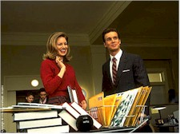
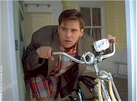
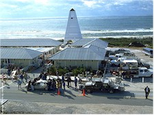

The first truly outstanding major American film of the year. And it's directed by an Australian. And by the time it's released here, it will have already opened in Finland (March 13th) and France (April 22nd). C'est la vie. Ah, the wonderful world of global film marketing. The film was actually ready late last year, but Paramount opted for a half-year delay to gear up its promotion machine. That aside, for those of you expecting another explosively wacky Jim Carrey piece, forget it. You won't find Ace Ventura here. Or Stanley Ipkiss a.k.a. The Mask. Taming of the maniacal beast fell to director Peter Weir, who performed a similar circus feat with Robin Williams in Dead Poet's Society nearly a decade ago.
This infectiously subdued and brightly-lit comedy features Carrey again involved with the television industry, but not as the darkly drawn (and abysmally bad) Chip Douglas from The Cable Guy. His Truman Burbank is Carrey as Everyman, a colorful character lost in a Disneyesque gingerbread landscape. Be warned right now! Don't take any pretensions in with you when you see this film. Let it flow over you like hot chocolate on a three-scoop ice cream sundae. Sure, sprinkle on some nuts – heck it is a comedy. Yummy!

Truman's the star of a 24-hour, 365-day-a-year soap opera, his true life story (as he sees it, at least) constantly playing out against a phenomenally huge global, over-captive audience. But Truman gets no residuals, nor gains from the billions in licensing fees for the dolls, pillows, and t-shirts ("Love Him. Protect Him.") promoting his image, because the amiable but clueless insurance agent lives a lie. And oh what a big lie it is! Unknown to Truman, his community (the serenely bucolic Sea Haven), as well as his family, friends, and co-workers (actually everyone) are all a ruse in the life of the ordinary existence of the 29-year-old who is the centerpiece of one of Tinsel Town's biggest and longest-running gambles of all time. No, not the Titanic. Bigger. Much Bigger. Since Truman happens to be the first child ever adopted by a business, the OmniCam Corporation has made him the unwitting subject of the most popular television show of all time.Sounds like one wild and crazy screenplay? Doesn't sound like it can work on the big screen? Yes it is and yes it can. Andrew Niccol created this rock-solid piece, his second produced script after the weakly-received Gattaca last year.

It is director Peter Weir that deserves the kuddos for creating this fantasy work, seemingly Hollywood's biggest set (a large techno-bio bubble overlooking the L.A. cityside). It does work, marvelously. Weir has a great knack for handling actors well, bringing out subtleties that other directors would miss. To name a few: Jeff Bridge's Max Klein and Rosie Perez's Academy Award-nominated performance as Carla Rodrigo in Fearless (1993), Weir's last effort. Robin Williams (again, an Oscar nomination) in Dead Poet's Society. Linda Hunt's Oscar-winning performance in the male role Billy Kwan in The Year of Living Dangerously (1983). Weir himself has been nominated thrice by the Academy (Green Card for writing, Dead Poets and Witness for direction). Truman might be his ticket to a well-deserved golden statuette come next March.
So what is The Truman Show like? It's a second cousin to the highly original late 1960s television series The Prisoner with a light dose of Sartre's No Exit and a few Luis Bunuel films for good measure. Beyond that, you'll have to experience it firsthand. The manipulation of Truman falls under the singular direction (as it has since just after the lad's conception) of Christof (Ed Harris), a megalomediac who plays god to all that surrounds Truman. He controls 5,000 hidden cameras (including masked-edge button cams) that track Truman's daily routine. He rolls away the darkness before the light and the light before the darkness, not to mention programming excessively localized weather. He spoon-feeds lines to Truman's synthetic wife Meryl (Laura Linney) and his "best friend" Marlon (Noah Emmerich). All this produces a show with ratings off the Richter scale, which allows for the omnipresent corporation to deliver an abundant and unabashed display of product placements and commercial endorsements in every scene.Yes, it's a perfect world. Too perfect. Like Chicken Little, Truman's sky begins to fall (in the form of a broken stage light) and he begins to sense that something's not right in the state of Sea Haven. His car radio accidentally picks up set blocking instructions. He inadvertently spots extras relaxing between "takes." The entire "cast" goes into a tailspin as Truman strays from his "script." Between the 10909th and 10913th day of his life, the protagonist's attempts to escape his confused state are met with bold and ultimately wrathful counter-measures by Christof (traffic jams, forest fire, nuclear power station leaks, hurricane). The media follows his every step, misreporting some key events that send the program's sponsors into a tizzy. But just when you think all is lost, the skies clear and hope beckons, not only for our star, but for the entire glassy-eyed world. Here is a provocative and profound film that deserves your undivided attention. Don't change the channel.